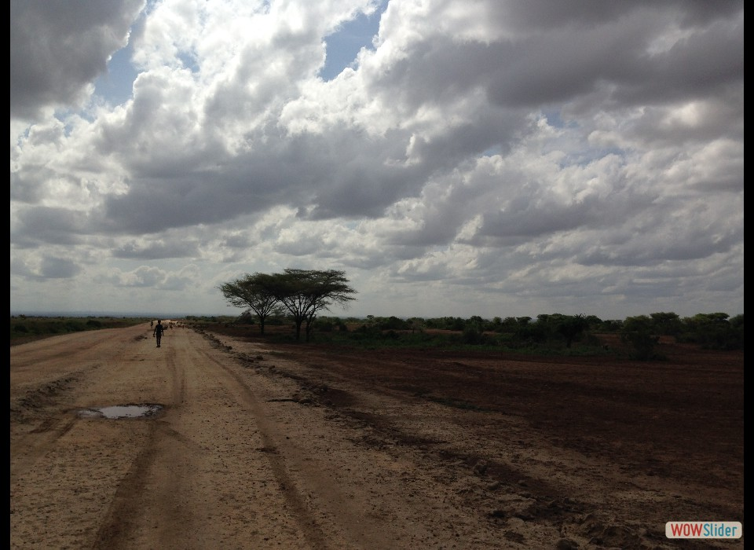
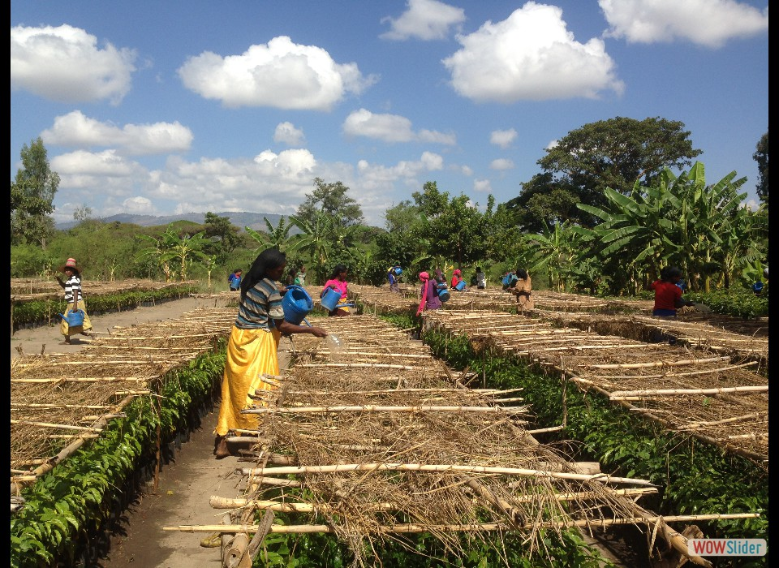
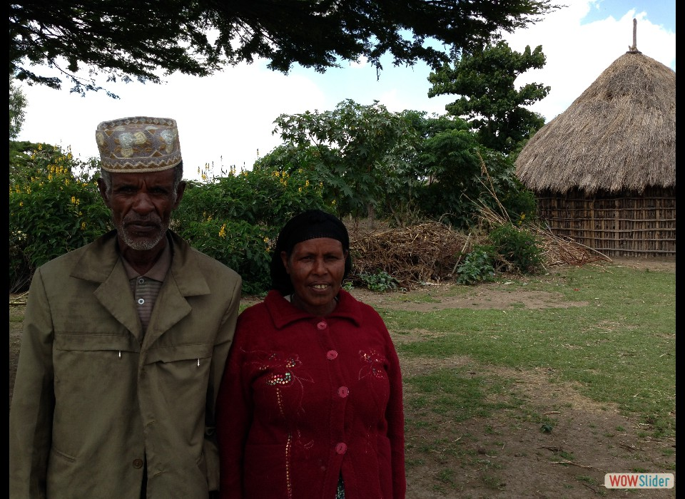
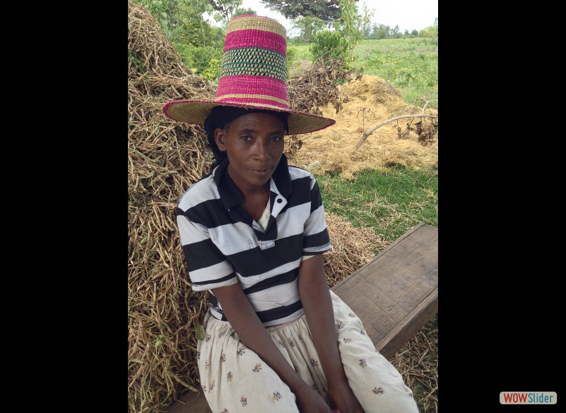
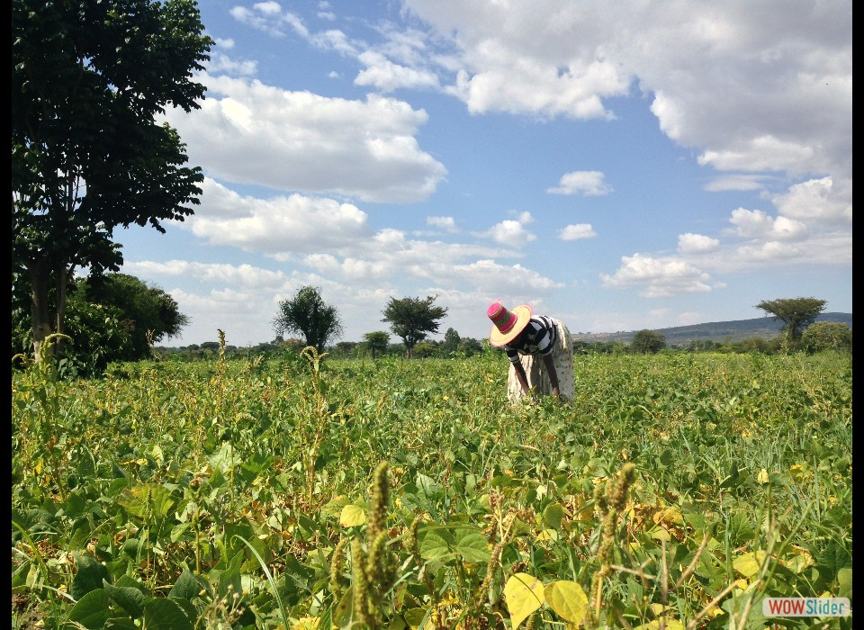
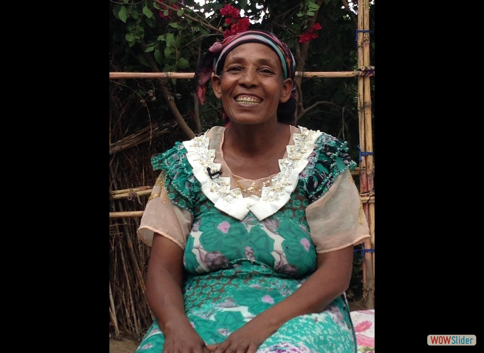
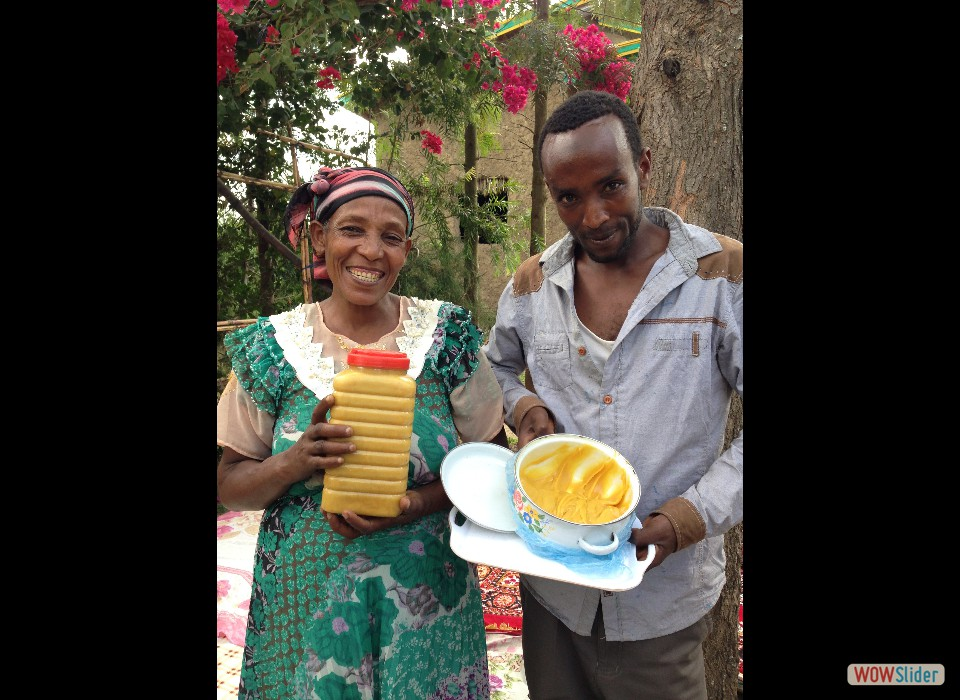

- In Ethiopia, drought kills more people than any other type of natural disaster. Agriculture is the cornerstone of the economy, with more than 90% of crops grown by small-scale farmers. Photo credit: Carol Han, USAID/OFDA.
- USAID (OFDA) is working with Food for the Hungry to support a plant nursery where farmers receive drought-resistant seedlings and learn techniques to maximize crop yields. Photo credit: Carol Han, USAID/OFDA.
- Thanks to the program, Enate Lombebo and her husband have been able to make money growing and selling coffee. They’ve also been able to buy livestock and send their kids to school. Photo credit: Carol Han, USAID/OFDA.
- Kibeme Onke sits in front of her bumper crop of haricot beans that she was able to grow and harvest with help from the USAID (OFDA)-supported plant nursery program. Photo credit: Carol Han, USAID/OFDA.
- In addition to receiving seeds and training, Kibeme learned how to read, write, and even manage household finances. She now has a savings account to fall back on. Photo credit: Carol Han, USAID/OFDA.
- Morshida Elamo says that USAID (OFDA) helped change her life. With the seedlings and training she received, she helped save her family from starvation. Carol Han, USAID/OFDA.
- Thanks to the agriculture program, Morshida is now one of the area’s premier honey producers. Her biggest accomplishment? Giving her children the opportunity to get an education. Photo credit: Carol Han, USAID/OFDA.
 3
3